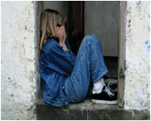

Grupos De Apoyo De Duelo
servicio gratuito on line, coordinado por una psicóloga, que tiene como objetivo ayudar a las personas a enfrentar y superar la pérdida por muerte de una persona querida.
Charlas
charlas sobre duelo (on line y virtuales) orientadas a respaldar a quienes han perdido a una persona querida.

Apoyo En Duelo Para Niñas, Niños y Y Adolescentes
ayuda a niñas, niños y adolescentes para superar una pérdida a través de la guía para madres, padres, cuidadoras y cuidadores.